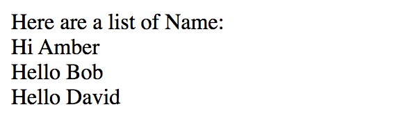
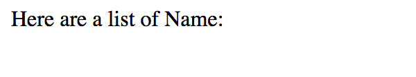
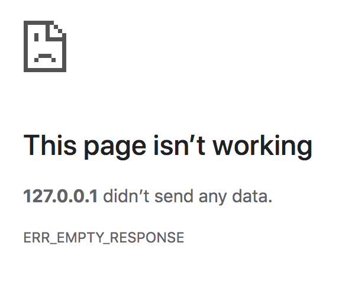

amber$ cd main/Golang/\[Golang\]\ Nested\ template\ definitions
[Golang] Nested template definitions
When parsing a template, another template may be defined and
associated with the template being parsed. Template definitions must
appear at the top level of the template, much like global variables in
a Go program.
The syntax of such definitions is to surround each template
declaration with a "define" and "end" action.
Here is the demo:
HTML:
Golang:
The picture is shown as pic 1. In the nested template,
-
to define the templates, use {{define "templateName"}} {{ end }} and
write the template inside, e.g. line 1-5 in html.
-
to use the template, use {{template "templateName"}}, e.g. line
25-27 in html.
To use the nested template, we need to consider about the passing data.
At first, I was quite confused by this part but after a while, I figured
out how it worked.
Line 12 in Golang pass the parameter into the template or to say HTML.
The data I pass here is an array, so the parameter HTML file get is an
array without the name of the array (in this case I can't use array name
to get data), to get the element in an array, I directly loop through
"." which kind of like "this" in JS. If what I pass is a map, like
{"1":"Amber", "2": "Bob", "3": "David"}, I use {{ 0.1 }} to call data.
If I want to pass that data in the nested template, I need to add data
when we use the template, like line 26 in HTML. I want to pass all the
data in this demo, so I just use "." in line 26. If I only want to use
"Amber" and I use a map as data, I can pass {.1} in.
*** In this situation, if I pass the data wrong or use the wrong
variable to get the data, I won't get error in VScode but will not get
any data on my browser, like pic 2.
*** I made other mistakes as well. When {{if}}, {{ range }},
{{ block }}, {{ with }} are used, {{ end }} should go with it. There is
one time I missed {{ end }}. I got a panic:
http: panic serving 127.0.0.1:58807: template: demo.html:27:
unexpected EOF
and browser looked like pic 3.
*** To compare the string, use eq, ne, lt, le, gt, ge instead of "==",
"!=" and so force. I made this mistake before and got a panic:
http: panic serving 127.0.0.1:62197: template: demo.html:17:
unexpected "=" in operand
browser looked like pic 3.
*** To use the index in template, writing in this way {{index .Name 0}}.

Pic 1

Pic 2

Pic 3